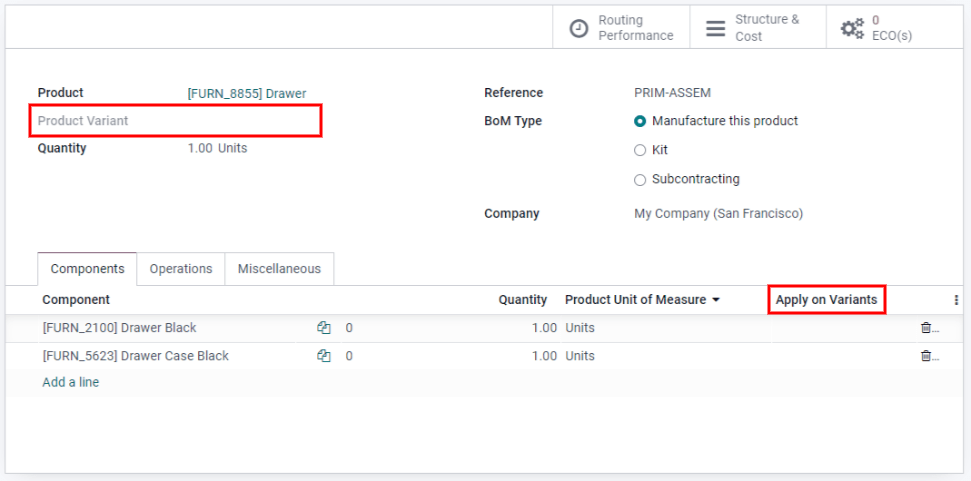

Lista de materiales¶
Una lista de materiales (LdM) es un documento que define la cantidad de cada componente necesario para fabricar un producto final. También incluye varias operaciones y los lineamientos de los pasos individuales necesarios para terminar el proceso de producción.
En la aplicación Fabricación podemos vincular varias LdM a un solo producto, de esta manera se pueden crear variantes de producto que tengan sus propias listas de materiales.
Configurar de manera correcta las LdM agiliza el proceso de fabricación y ahorra tiempo.
Configurar una lista de materiales (LdM)¶
La configuración más sencilla de una LdM es la que no contiene operaciones ni instrucciones, solo componentes. En estos casos, la producción se gestiona con las órdenes de fabricación.
Si desea crear una LdM desde el módulo Fabricación, vaya a , haga clic en Crear y seleccione su Producto.
Nota
También puede crear una LdM desde el formulario del producto. En este caso, el campo Producto ya está completado.
Si desea crear una LdM estándar, establezca el tipo de LdM como Fabricar este producto. Haga clic en Agregar línea para añadir todos los componentes necesarios para crear el producto final. Puede crear nuevos componentes desde la LdM, o se pueden crear antes en . Por último, haga clic en Guardar para terminar de crear su LdM.
Establezca una lista de materiales (LdM) para una variante de producto¶
También puede asignar LdM a variantes de productos específicas. Cuenta con dos opciones de configuración disponibles para elegir.
Nota
Si desea asignar LdM a variantes de productos, primero debe configurar los atributos de variantes en el formulario del producto.
El primer método consiste en crear una LdM por variante, para esto debe crear una nueva LdM y especificar la variante del producto. El segundo método consiste en crear una LdM principal que contenga todos los componentes necesarios para todas las variantes. Para ello, debe especificar en la columna Aplicar en variantes qué variante utiliza cada componente.
Crear operaciones¶
Agregue una Operación en la LdM en la que se especifiquen las instrucciones para la producción y registre el tiempo invertido en una operación. Si desea usar esta función, debe habilitar las Órdenes de trabajo en .
Para crear una operación primero debe crear una LdM, sin salirse del formulario, vaya a la pestaña Operaciones y haga clic en Agregar línea. En la ventana Crear operaciones escoja un nombre para la operación, un Centro de trabajo y complete los campos de duración. Al igual que los componentes, Odoo da la opción de especificar una variante de producto en el campo Aplicar en variantes, de esta manera la operación solo se habilitará en esa variante. Por último haga clic en Guardar y cerrar.
Nota
Cada operación es única ya que siempre está vinculada exclusivamente a una LdM. Las operaciones se pueden reutilizar al configurar una nueva lista de materiales gracias a la función Copiar operaciones existentes .

Agregar subproductos a una lista de materiales (LdM)¶
Un subproducto es un producto residual que se crea durante la producción además del producto principal de una LdM. A diferencia del producto principal, en una lista de materiales puede haber más de un subproducto.
Para agregar subproductos a la LdM debe habilitar la función Subproductos en .
Una vez que la función se encuentra activada, puede agregar subproductos a la lista de materiales haciendo clic en la pestaña Operaciones y después en Agregar una línea. Luego, escriba un nombre para el subproducto e indique la cantidad y la unidad de medida. Si la LdM tiene operaciones configuradas, especifique exactamente en qué operación se produce el subproducto en el campo Producido en la operación y por último haga clic en Guardar.